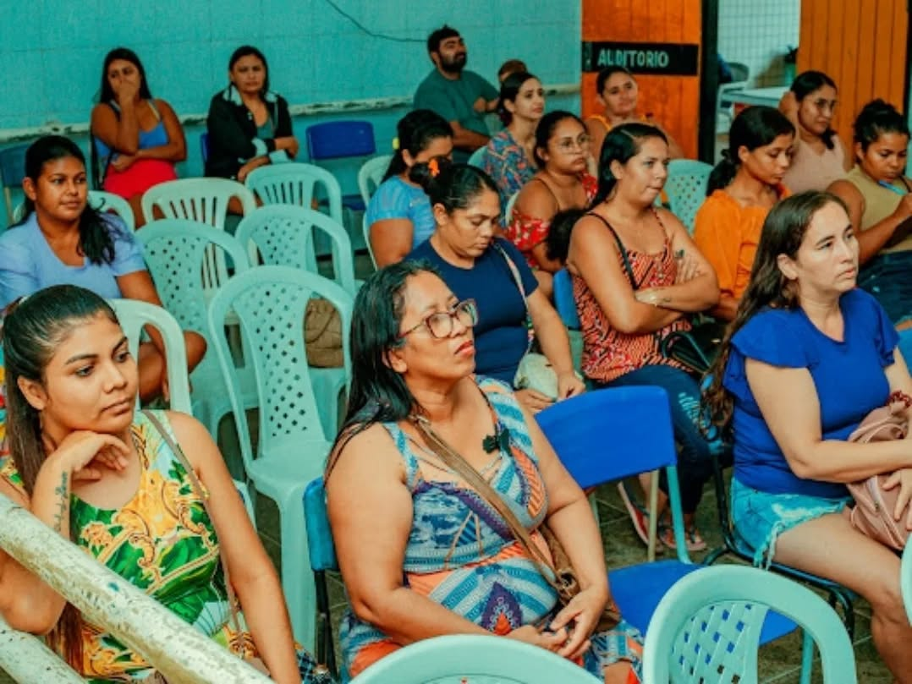
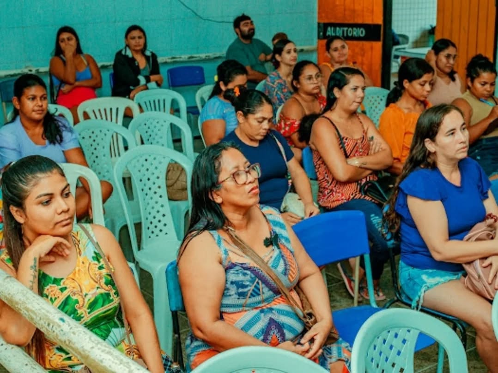
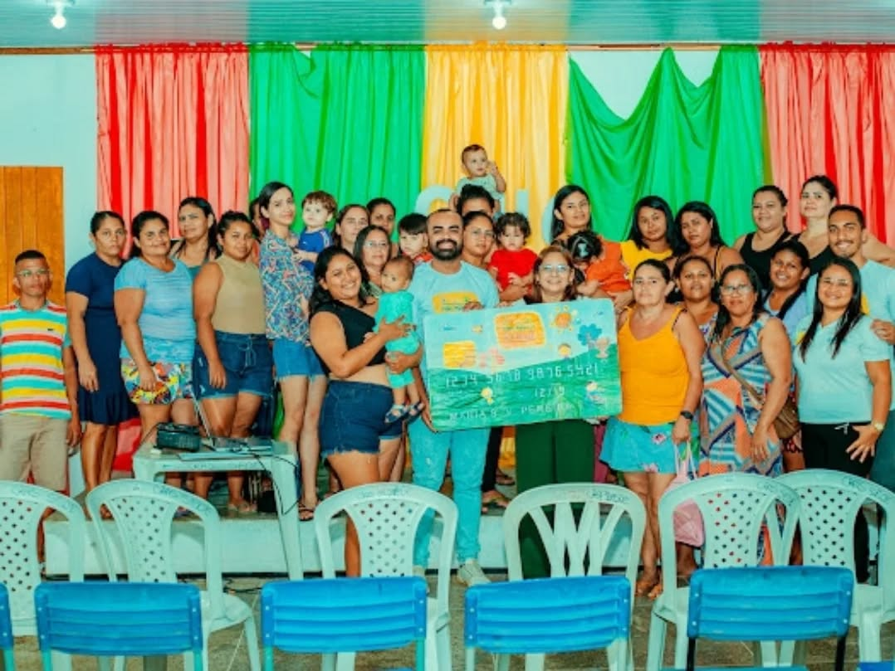
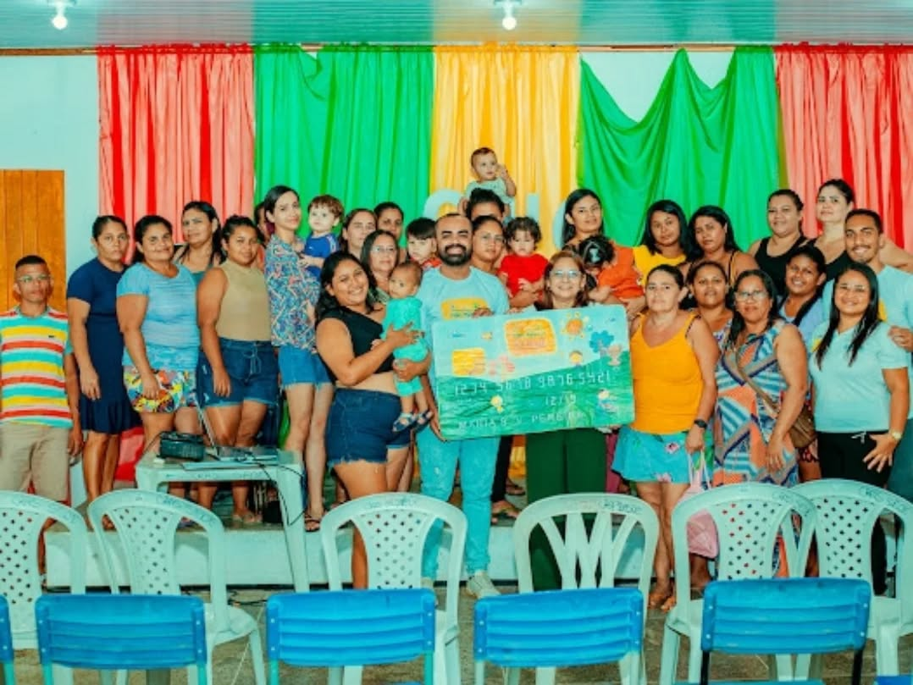

A Prefeitura de Amontada, por meio da Secretaria de Trabalho e Desenvolvimento Social, promoveu, no último dia 4, um importante momento de esclarecimento com os novos beneficiários do Cartão Mais Infância. O encontro aconteceu no auditório do CRAS Sede e foi marcado por diálogos produtivos e orientações fundamentais sobre o benefício.
Na ocasião, foram repassadas informações detalhadas sobre a utilização do Cartão Mais Infância, seus objetivos e a importância desse auxílio para promover melhores condições de vida às famílias em situação de vulnerabilidade social. Além disso, os participantes tiveram a oportunidade de esclarecer dúvidas e entender como o programa pode contribuir para o fortalecimento das políticas públicas voltadas à infância e à redução das desigualdades sociais.
A Prefeitura de Amontada reforça seu compromisso em garantir que as famílias mais necessitadas tenham acesso a direitos e oportunidades que proporcionem dignidade e qualidade de vida, reafirmando que ações como essa são essenciais para construir um futuro mais justo e igualitário para todos.
 


 

© 2025 Amaral Neto - Todos os direitos reservados